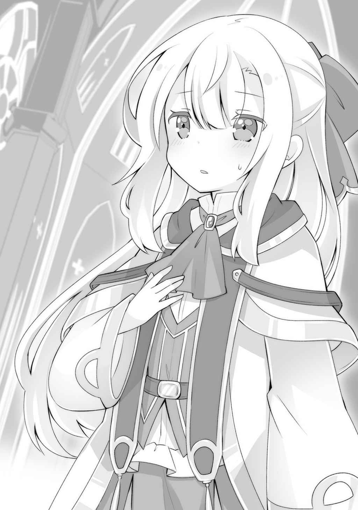

幕間 ルキア・ハスクバーナ ①
私の兄であるカイ・ハスクバーナが行方不明になったのは、十二歳で受ける「祝福の儀式」の最中でのことだった。
私の一つ前に呼ばれた兄は、いつも通りの優しい笑顔で冗談を交わして、儀式を行う部屋へと入っていった。
私たち兄妹は、儀式を受ける前に祝福を得てしまっているから、司教様にお叱りを受けるかもしれない。兄から、事前に祝福を授かってしまったことを絶対に秘密にするように言われていたので私は誰にも言わずにいたが、さすがに儀式では『聖印』が光らないことで、バレてしまうだろう。
ただ、私の祝福である『真実の神イデア』は、名前が知られていることもあり、儀式の前に祝福を授かってしまう子が多いらしい。なにせ、名前を聖印へ語り掛けるだけなのだ。だから、おそらく私はあまり叱られないだろう。
しかし、聞いたこともない神である『アラミラ』の祝福者である兄は、今頃こっぴどく怒られているのか、それともどうやって神の名を知ったのか問い詰められているのか。そしたら、私が能力を使って教えたのだと、兄は悪くないのだと、助けに行かなければ。
──そんなことを、のんきに考えていた。
だが、兄はいつまで経っても、儀式を行う部屋から戻ってこなかった。
結局、兄が戻ることはなく、次の順番である私の名前が呼ばれてしまった。
「では、聖布をいただこう」
司教様の声は震えていた。壁際に、全身黒服の審問官が一人控えている。
「私の兄……カイ・ハスクバーナはどうしたのですか？ 私の前に来たはずなのですが、まだ戻ってきていないみたいで……」
私は思い切って訊ねてみた。
司教様は青い顔をして、ふと後ろにいる審問官に視線を送った。審問官は身じろぎすらしない。司教様は一瞬逡巡し、一言だけ「すでに戻ったはずですが……」と答えた。
明らかに何かがあった。
彼らのそのわずかな動きだけで、子どもだった私にも、十分に理解できたのだった。
だからといって、彼らに私の祝福の能力である『真実の瞳』を使うわけにはいかない。
司教が、私の左胸の聖布に向け呪文を唱えると、聖布は剥がれ落ちた。
私自身も、完全に発現した状態になった自分の聖印を見るのは初めてだ。
想像していたよりも複雑な形をしている。光の神の祝福者である父の聖印を見たことがあるが、それと比較してもまるで別物。神様ごとに形が違うのだから、こういうものなのだろうか。しかし、

「……え？ そんな……」
その声は私の目の前にいる司教様のものだった。
私の聖印を何度も確認し、執拗に手にした本のページをめくり、何かを確認している。
イデアの祝福者など、それほど珍しくないはずだが──
「見せろっ！ お……おおおおおお、神よ！」
「えっ、えっ、なんなんですか」
後ろに控えていた審問官が、いつのまにか司教様を押しのけ目の前まで来て、身をかがめて私の聖印を凝視していた。
「まさかまさかまさかまさか！ 神よ！ 今日！ この日に出会えたことを感謝します！ あ……ああああああああああああああ！」
ヤバい。これはヤバい奴だ。
覆面から覗く瞳が血走っていて、到底まともな人間のそれではないと直感した。
兄もよく言っていた。神殿に傾倒している人間の中には、常識が歪められ信じられない考え方をする者がいるから、それに染まらないように気を付けろと。
「審問官殿……一体どういうことなのです……？ まさか二人連続で……？」
「連続……？ 口を慎みなさい、彼女に宿りし神は、あんなものとは比べられぬものです。……しかも！ 素晴らしいことに、三柱もの神をその実に宿している……！」
三……？ 今、確かに三柱と言った。
この世界には、極々稀なことだが二つの祝福を身に宿す者がいる。だが三重など聞いたこともない。ただでさえ、祝福者として生まれる確率は低いのに、三重？ そんなことがありえるのだろうか。
私自身は真実の神イデアの祝福者であり、他人の『真実』を見ることができるが、この能力は「自分自身」には使うことができない。そうでなくても、自分に三柱もの神が宿っているなどと、誰が想像するだろうか。
「あなたに宿りし神は、エテルノとデティースス。そしてイデアです。さあ、神の名を呼び掛けてみなさい」
審問官が仮面を付けたまま、気色の悪い猫撫で声を出す。
エテルノとデティースス。やはり聞いたことがない神だ。
「エテルノ、デティースス、イデア」
私は三つの神の名を間髪入れずに口に出した。私がイデアの祝福をすでに授かっていることを誤魔化すのに、ちょうど良かったからである。
左胸の聖印が一瞬輝き、すぐに収まる。
同時に、エテルノとデティーススの能力のことが、頭の中に響きわたった。
兄がよく「神殿は祝福者のことを妙に隠しているから、なにか危険な祝福があるんだと思う」と言っていたが……なるほど、これは危険な能力だ。
「一息に神の名を呼び掛けるなど……、まあいいでしょう。おめでとうございます。あなたはすでに知っておられるでしょうが、神の名は必ず隠さなければならぬもの。イデアはともかく、エテルノとデティーススの名は今後、絶対に口にしないように」
司教様の代わりに、審問官が注意事項まで私に告げる。
本来、審問官はそれほど上の立場ではないはずだが、この場では明らかに司教様よりも上の振る舞いをしている。服装は審問官で間違いない。日曜教室などでも何度か見かけたことがあるからだ。
「あの……審問官様……、私の兄は……」
「忘れなさい」
それは断固とした口調だった。
質問すら許さぬという強い意志を込めた完璧な拒絶。
「さあさあ、あなたにはこれから輝かしい道が開けています。あなたの父君も神官でしたね？ まずは二年間、修道女として生活し神官見習いとして学んでいただきます。その後は──」
審問官が、その恐ろし気な風貌からは想像できないような優し気な調子で、私のこれからについて話し続けている。
私はそれに肯く従順な子どものふりをしながら、頭の中では全く別のことを考えていた。
この男は、兄のことを「忘れなさい」と言った。兄は普通ではない。だからこそ、私にとっては特別だったのだ。それは、この世界にとってもそうだったのかもしれない。
私は、兄のことはなんでも知っている。
なんでもだ。
兄には前世の記憶があるということも。
私たち二人が拾われ子であるということも。
実の兄妹ではないかもしれないということも。
忘れろということは、もう会えないということだ。
私の中に、いろいろな考えが駆け巡った。
会えないのか。連れ去られたのか。殺されたのか。
わからない。なにもわからない。
じゃあ、自分にできることは？
なにか、今、ここでしかできないことがあるのではないか？
私の力は何のためにある？
「『真実の瞳』」
躊躇は一瞬。私は審問官の手に触れ能力を発動した。
相手の心を、記憶を読む力。神殿はイデアの能力を「嘘を看破する力」と喧伝しているが、あれは嘘だ。本当はもっと恐ろしい力なのである。
審問官が仮面の奥の目を剥く。
こいつは私がイデアの祝福を今しがた授かったばかりだと信じている。
だから私は、無邪気で少し抜けた子どもが、授かったばかりの力を目の前の人間に何も考えずに行使する……そう見えるように、術を使った。
今から二年前、規則を破り十歳の時に得たこの力は、夜ごと、幾度となく眠る兄に対して使ってきたことで力を増し、今ではかなり深いところまで見えるようになっている。
男の知る情報が、一気に頭の中に流れ込んでくる。
どうやら、この男──神殿にとって、私が授かったばかりの『時の神エテルノ』の力が、組織にとって重要であるらしい。
「なにをするっ！」
審問官が焦って手を振り払う。だがもう遅い。だいたい見えた。
（なるほど……兄に祝福を与えた神は邪神……と。神の名前はこの男も知らない。そして、もう一人の審問官に引き継ぎ……。どこか遠くへ捨てに行く……か。引き継がれたほうが『特級審問官』で、この男が『上級審問官』。ふーん、どうやら詳しいことを知っているのは特級のほうみたいね。どうも、兄を殺しはしていないみたい。神返りが怖いから……か。日曜教室で教わってはいたけど、神返りって本当に起こるのね。なるほど）
「あっ……ごめんなさい～、神様の声がしたから、使ってみようって思っちゃったの……。でもぐちゃぐちゃでなんにもわかんなかった」
「ん、むぅ……、その力は神より授かりし力、これからは無暗に使ってはいかんぞ」
「はーい。わかりました！」
子どもらしい演技でやり過ごしながら、私は目標を立てた。
特級審問官に会う。
上級であるこの男ですら、司教よりも位が上らしいことを考えると、おそらくは大司教クラスの権能。会うには、私自身が神殿で偉くなるしかないだろう。
そして、どこかへと連れ去られた兄の所在を、どんな手を使ってでも知ること。
兄を助けられるのは私しかいない。